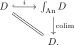

Let \(\Cat^{\An\text{-}\colim}\) denote the subcategory of \(\Cat\) consisting of the categories with anima-indexed colimits and functors preserving anima-indexed colimits. Then the construction \(C \mapsto \int_{\An}C\) defines a left adjoint to the inclusion \(\Cat^{\An\text{-}\colim} \hookrightarrow \Cat\), with unit and counit given by the functors
\[i\colon C \hookrightarrow\int_{\An}C \qquadtext{ and } \colim\colon \int_{\An}D \to D,\]
respectively.
Proof
We check that the two triangle identities are satisfied. The first one takes the form

This commutes via the counit map \(\colim \circ i \to \id_D\), which is an isomorphism as \(i\) is fully faithful. The second triangle identity amounts to the claim that for every object \((A,X) \in \int_{\An} C\), the canonical map \(\colim_{a \in A} (\{a\}, X_a) \to (A,X)\) in \(\int_{\An}C\) is an isomorphism, which as observed before is an immediate consequence of the computation of colimits in \(\int_{\An}C\).